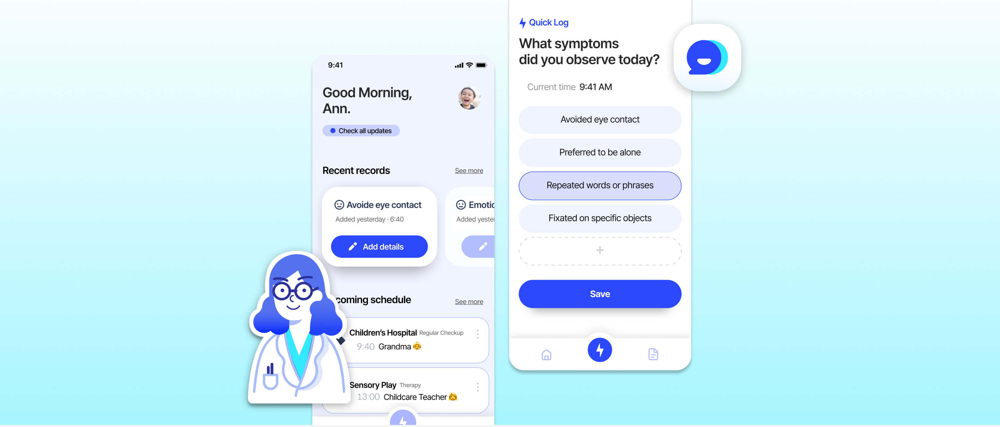
How can children with ASD recieve accurate and continuous care over time?
At the Healthcare Entrepreneurship Society “Medilux,” multi-background members interested in children with developmental disabilities gathered. Through item development, our team won the grand prize at the Digital Healthcare Hackathon and received project development investment.
Through volunteering with diverse groups of children, I developed a deep interest in early childhood development. By working with both typically developing children and children with autism spectrum disorder (ASD), I became increasingly aware of the challenges their parents face, particularly in accessing timely and effective support.
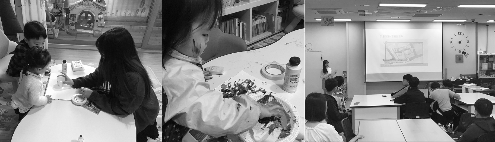
The cost of effective autism treatment is extremely high. Applied Behavior Analysis (ABA), one of the most widely recognized treatment methods, can cost up to ₩4 million per month for full-time sessions. (Autism Partnership Korea)
According to the CDC, the prevalence of autism spectrum disorder in the United States has risen sharply, from 1 in 166 children (0.67%) in 2004 to 1 in 68 (1.46%) in 2016, and further to 1 in 59 (1.69%) in 2018.
According to the CDC, the prevalence of autism spectrum disorder in the United States has risen sharply, from 1 in 166 children (0.67%) in 2004 to 1 in 68 (1.46%) in 2016, and further to 1 in 59 (1.69%) in 2018.
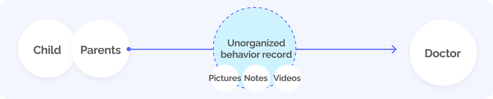
Among the various issues related to developmental disabilities, we focused on behavioral records of children with developmental disabilities. For children with developmental disabilities, everyday behavioral observations often play an important role in clinical assessment and ongoing care. Caregivers often document behaviors through scattered photos, videos, and notes, making it difficult to identify patterns and communicate them efficiently during clinical visits.
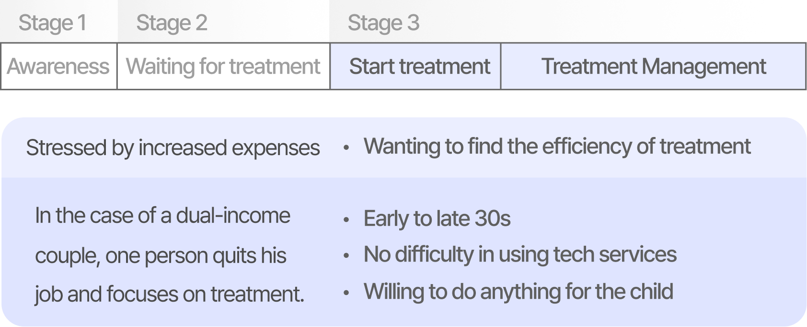
Desk Research : Surveys, Developmental Disability Blogs Field Research : Qualitative research (interview - user/expert interview) Data Modeling : Affinity Mapping, Personas Service Concept : Brainstorming Service Define : user scenario, storyboard, IA
Rather than treating caregivers as isolated users, we mapped the full ecosystem surrounding a child’s care to understand where behavioral data breaks down across institutions, roles, and responsibilities
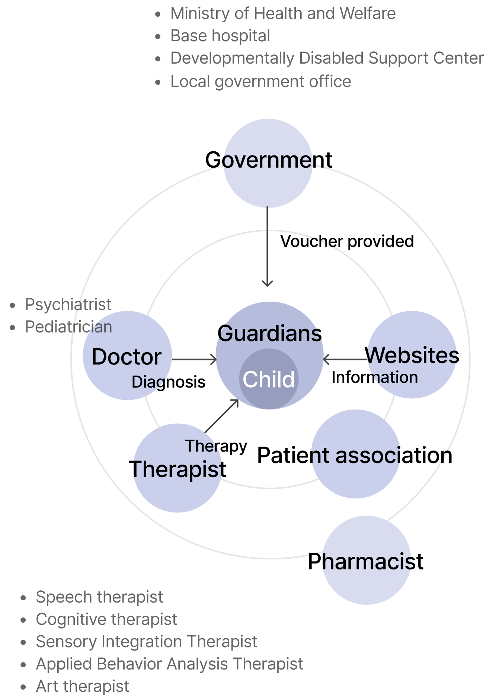
To understand the needs of caregivers more deeply, we conducted 1:1 interviews with parents of children with ASD.
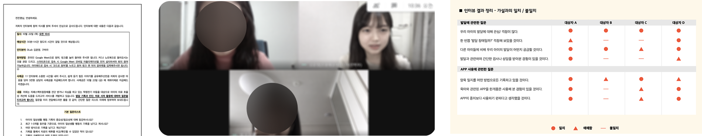
These interviews helped us see caregiving as an ongoing negotiation between emotional labor and time pressure.
To understand the needs of caregivers more deeply, we conducted 1:1 interviews with parents of children with ASD.
Participants: 2 child psychiatrists/
One-on-one interviews
Participants: 4 developmental therapists (2 speech-language therapists, 2 occupational therapists)
Speaking with clinicians and therapists clarified a critical gap: while professionals value longitudinal behavioral patterns, the data they receive is often episodic, inconsistent, and shaped by caregiver stress rather than clinical relevance.
Reduce documentation burden through quick, structured prompts that caregivers can complete during busy routines.
Enable multiple caregivers to collaboratively manage a shared schedule and behavioral records. This ensures all stakeholders are “on the same page” regarding the child’s developmental status.
Provide summarized, visual reports highlighting only the most relevant data for clinical use. This helps caregivers quickly and clearly communicate during short medical appointments.
Parents of children with developmental disabilities experience the highest levels of stress among caregivers of children with illnesses or disabilities. I recognized that warm, encouraging communication is a crucial element in supporting consistent and sustainable record-keeping.
We designed our prompts to be simple and intentional—like a friendly doctor asking just the right questions—so that caregivers could feel guided, not overwhelmed.
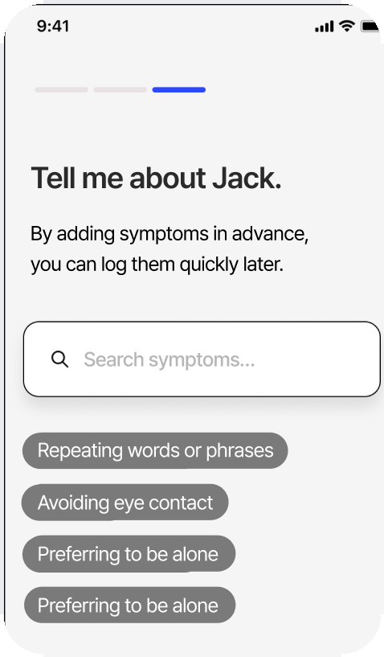
Children with developmental disabilities often display a recurring set of symptoms. During sign-up, users can search for and select relevant symptoms that their child frequently exhibits. By categorizing these symptoms in advance, the system can later provide tailored content and personalized insights based on the selected symptom types.
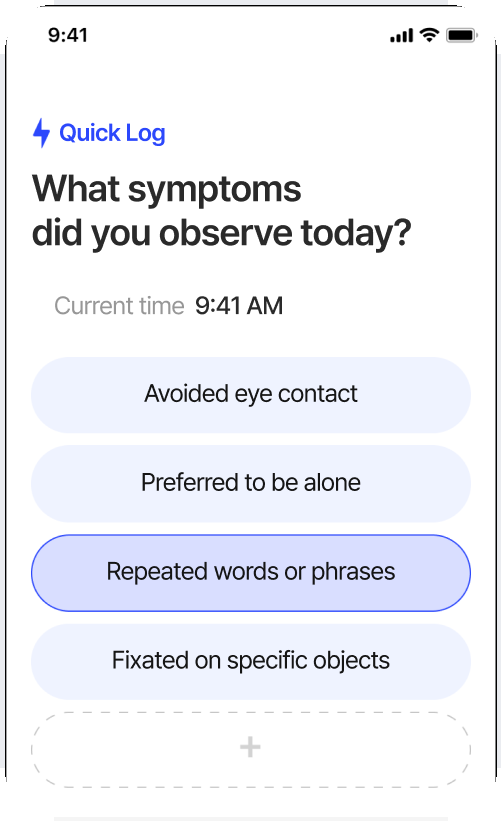
When a symptom occurs, caregivers are often focused on managing the situation and unable to document it in detail. The Quick Log feature allows users to select a symptom with a single tap, automatically saving the selected symptom along with a timestamp—minimizing the burden of real-time data entry.
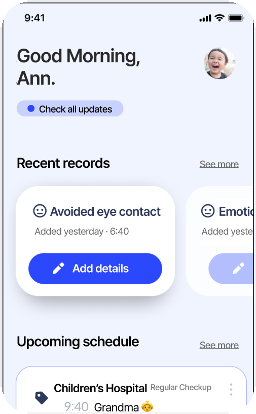
Records created via the Quick Log can be expanded later to include contextual information such as triggers, consequences, and calming strategies. This helps analyze behavioral patterns in more depth and creates a valuable record for treatment and professional consultation.
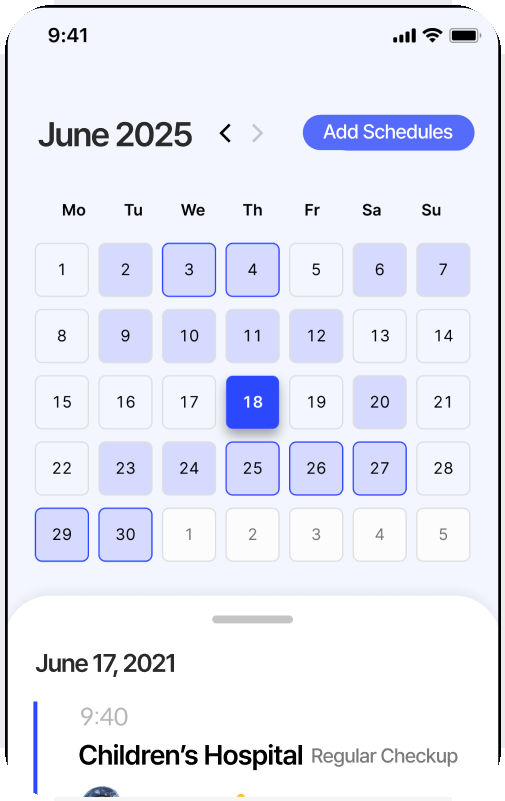
In most cases, parenting is not handled solely by the parents. Grandparents and childcare providers are often involved in the child’s daily care. This leads to gaps in behavioral records and fragmented information. By linking behavior logging to a shared schedule, caregivers who spend time with the child are prompted to record observations in a timely and structured way.
A core-feature MVP was developed as an Android app and tested with target users through user testing (UT) sessions.
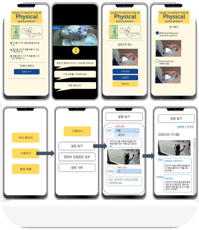
By allowing users to input the frequency of symptoms over defined time periods, the system accumulates objective data on behavioral patterns. This enables visual tracking of symptom progression for caregivers, while also laying the foundation for personalized service expansion.
The reporting feature prioritizes delivering only clinically relevant information in a short time frame. Informed by physician interviews, it allows filtering by symptom and time to surface trends in frequency and severity.
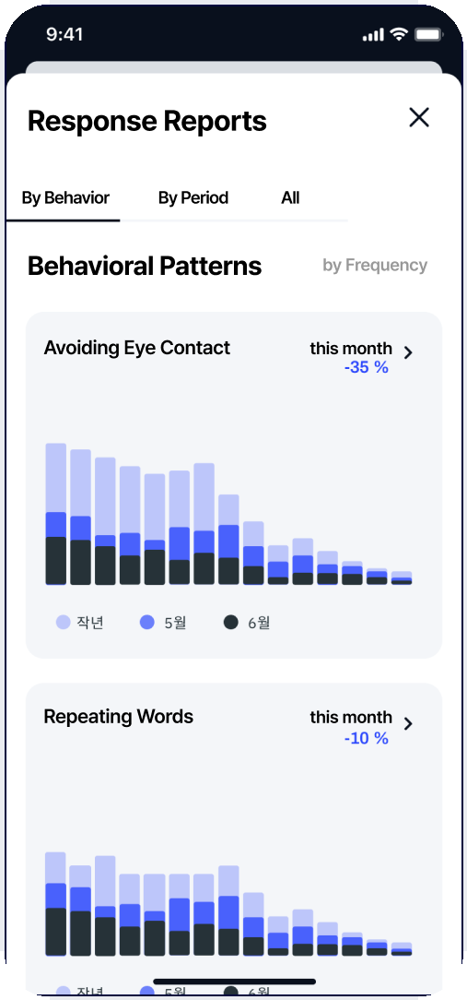
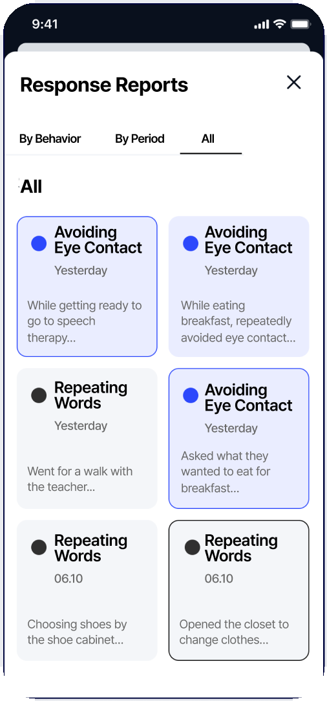